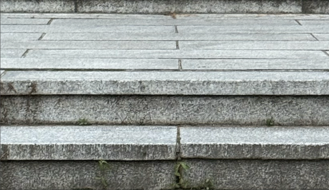
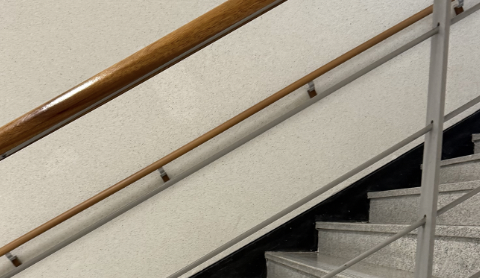
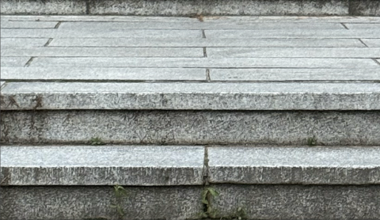
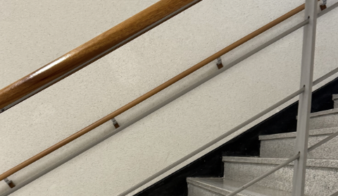

- 디딤판
일반적으로 30cm 내외의 깊이를 가지며, 보행 시 안정감을 제공해야 함. 미끄럼 방지 처리가 되어있는 경우도 많고 재질에 따라 시각적 무게감도 달라짐.
- 높이판
디딤판과 디딤판 사이를 잇는 수직면. 일반적으로 15cm~18cm 정도의 높이가 적당하며, 너무 높으면 피로감이 커짐.
- 계단참
여러 단을 오르다가 중간에 위치한 수평의 넓은 공간. 방향 전환 시 안정성과 휴식을 위한 공간이며, 건축법상 일정 계딴 수 이상일 경ㅇ 반드시 설치해야 함.
- 손잡이/난간
사람이 올라가거나 내려갈 때 지지하고 붙잡을 수 있는 구조물. 높이, 두께, 마감이 모두 인체공학적으로 설계돼야 하며, 장애인, 노약자를 위한 배려 요소이기도 함.
 


